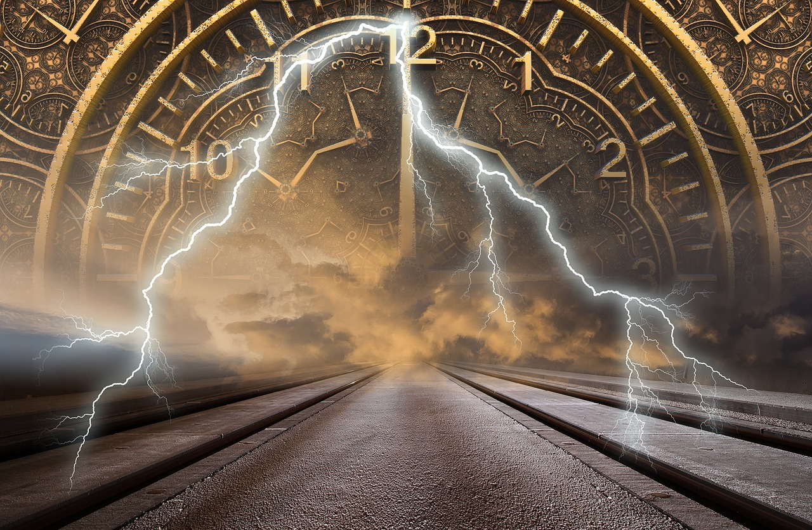

টাইম ট্র্যাভেল
টাইম ট্র্যাভেল বা সময়যাত্রা এমন একটি বিষয় যা নিয়ে আমরা কখনো না কখনো ভেবেছি।টাইম ট্র্যাভেল মানুষের জিজ্ঞাসা কল্পনার মধ্যে অন্যতম।কখনো কি জানতে ইচ্ছে হয়েছে সময়ের সৃষ্টি কিভাবে হলো? সময়ের মৃত্যু আছে কিনা তা কি কখনোই জানতে ইচ্ছে করেছে? আপনার অস্তিত্বের মূল্য কতটা তার পরিমাপ কিভাবে করবেন জানতে ইচ্ছে করেছে? টাইম ট্রাভেল যদি সত্যিই সম্ভব হয়ে থাকে তাহলে প্রথম টাইম ট্রাভেল কে? টাইম ট্রাভেল বিস্তারিত এই পোস্টে জানানোর চেষ্টা করবো
“টাইম ট্রাভেল” নামটি শুনলেই চোখের সামনে ভেসে কাল্পনিক জগতের একটি গোল টাইম মেশিন। যা ব্যাবহার করে মানুষ চলে যেতে পারে ভবিষ্যতে। দেখতে পায় অত্যাধুনিক দালানকোঠা, দ্রুতগতির যানবাহন যা কল্পনাকেও হার মানায়। সবারই মাঝে মাঝে ইচ্ছে জাগে ভবিষ্যত থেকে কিছুক্ষণ ঘুরে আসি, দেখে আসি নিজেদের কীরকম অবস্থা। যদি স্বপ্নের মতো সবকিছুই পেয়ে যাই তাহলে তো ভালোই। আর যদি দেখি বিপরীত কিছু, তবে দ্রুত অতীতে ফিরে গিয়ে নিজের করা ভুল যেনো শুধরে নেই। ইশ! এরকমটা যদি সত্যিই হতো!
এটি কি আদৌ সম্ভব! সময় যাত্রা সম্ভবের করার জন্য বিজ্ঞানীরা বহু বছর ধরে বিভিন্ন ধরনের গবেষণা করে আসছেন।হতে পারে কিছু বছরের মধ্যেই টাইম মেশিনে করে টাইম ট্রাভেল সম্ভব ! অথবা কয়েকশ বছর পরেও হতে পারে।

জেনে খুউব খুশি হবেন যে টাইম ট্র্যাভেল করার ফর্মুলা আবিষ্কার হয়ে গেছে।এখন শুধু তা বাস্তবে সফলভাবে প্রয়োগ করার পালা!😋
পোষ্টের মধ্যে খুবই কম খরচে কিভাবে টাইম ট্র্যাভেল করবেন তা বিস্তারিত বর্ণনা রয়েছে।
কি মশাই করবেন নাকি টাইম ট্রাভেল?যদি সিঙ্গেল থেকে থাকেন তাহলে তো কথাই নেই।অতীতে ফিরে গিয়ে একটা মেয়ে পটাবেন।বর্তমানে এসে দেখবেন আপনি মিঙ্গেল! আহা মজা না!?😋
দাড়ান একটু সবর করেন, এতো সহজ হলে তো হতোই।আপনাকে পুরো বর্ণনা করি।
আচ্ছা কল্পনা করেন, আপনি এসএসসি পাশ করে কলেজে ভর্তি হলেন।একটা মেয়ে যার নাম সাদিয়া তাকে আপনার অনেক ভালো লাগলো,ধীরে ধীরে সাদিয়ার বন্ধু হলেন। তারপর আপনি ভাবলেন আপনি সাদিয়াকে প্রপোজ করবেন এবার! কিন্তু তার আগেই শুনেন একদিন আগে তাকে কেউ মনে করুন আমিই প্রপোজ করলাম। আর সাদিয়াও আমাকে অ্যাকসেপ্ট করলো। আচ্ছা মশাই এখন আপনি কি করবেন!?
মানে কি চিন্তা করবেন?
– নিশ্চয়ই এটাই যে,”ইশ যদি তাকে আমি আর কিছুদিন আগে প্রপোজ করার চিন্তা করতাম।”
আর কিছুদিন পূর্বের সময়ে ফিরে যেতেই আপনাকে সময় যাত্রা করতে হবে।সময়কে বশে এনে অতীতে চলে যেতে হবে।
এবার মনে করুন আপনি অসম্ভব মেধাবী।পড়াশুনার পাশাপাশি টাইম মেশিন বানানোর চেষ্টা করছিলেন।ঐযে প্রপোজ করতে না পেরে এসে মেশিনটি সেট আপ করলেন।সত্যি সত্যিই নির্বিঘ্নে টাইম মেশিন দিয়ে টাইম ট্র্যাভেল করলেন!! ফিরে গেলেন 5 দিন বা 10 দিন বা 100 দিন বা তারও আগে।গিয়ে এবার সাদিয়ার সাথে আরো আগেই দেখা করলেন।সব কিছু ঠিক চলছে যেদিন আমি প্রপোজ করব তার আগের দিনই মেয়েটিকে আপনি প্রপোজ করলেন।মেয়েটিও রাজি হয়ে গেলো।আহা! এবার আপনি দিলেন পার্টি।। এখন ঐযে আমি আছি আমার গফ গেলো কই!😡
#সময় যাত্রা বোঝার আগে আমাদের বুঝতে হবে সময় আসলে কি?
= সময় দ্বারা আমরা ব্যাক্তি বা বস্তুর অস্তিত্বকে বিচার করি।কোনো জিনিসের অস্তিত্ব কতটা সময় দ্বারা তা পরিমাপ করা সম্ভব।
উদাহরণ: বয়স।আমরা যতদিন বেঁচে আছি ততদিনই আমাদের অস্তিত্ব রয়েছে এই পৃথিবীর বুকে। আমরা কতদিন বেঁচে আছি তা হচ্ছে আমাদের বয়স। এই বয়স অর্থাৎ নির্দিষ্ট সময় না থাকলে আমরা বুঝতেই পারতাম না আমাদের অস্তিত্ব কতটুকু। হয়তো এজন্যই সময়ের মূল্য রচনা সবাই পড়ি। ওই রচনা বা অনুচ্ছেদের মধ্যেও সেইম কথাই লেখা রয়েছে।বিশ্বাস হচ্ছেনা? মিলিয়ে দেখে নিন!
সময়ের সংগা: সময় হলো প্রকৃতির গতিয় অবস্থা।
খুব সম্ভবত সঙ্গাটি কেউ বুঝতে পারেন নি। বাংলায় লেখা বুঝতে পারলেও ঠিকভাবে বুঝে উঠতে পারেন নি।যাকে বলে “বুঝেও বুঝতে পারিনি, জেনেও জানতে পারিনি”😂
সঙ্গাটির তাৎপর্য বুঝতে হলে, প্রথমে আমাদের বুঝতে হবে প্রকৃতি কি?
এই পৃথিবীর পৃথিবীর বাহিরের সমগ্র সৃষ্টিই হচ্ছে প্রকৃতি।বৃহৎ গ্যালাক্সি থেকে শুরু করে পরমাণুর ক্ষুদ্রতম অংশের(অনুর) ক্ষুদ্রতম অংশ কোয়ার্ক সবকিছুই প্রকৃতির উপাদান।আপনি,আপনার গার্লফ্রেন্ড প্রকৃতির অংশ,আমিও প্রকৃতির অংশ।
এখন প্রকৃতির গতিয় অবস্থা বলতে বুঝানো হয়েছে প্রকৃতি মূলত গতিশীল।প্রকৃতি গতিশীল মানে তার প্রতিটা উপাদানই গতিশীল।আপনি যখন ঘুমোচ্ছেন তখনও কিন্তু আপনি গতিশীল! কি বিশ্বাস হচ্ছে না? মহাকর্ষ অভিকর্ষ বলের কারণে আপনি সর্বদা গতিশীল।কারণ পৃথিবী ঘুরছে।তাই পৃথিবী গতিশীল। আপনিও পৃথিবীর সাথে ঘুরছেন। পুরো মহাবিশ্বে এমন কোনো উপাদান নেই যেটা স্থির।পরম স্থিতি কোনো বস্তুই অর্জন করতে পারে না।এমনকি সূর্য ও না।